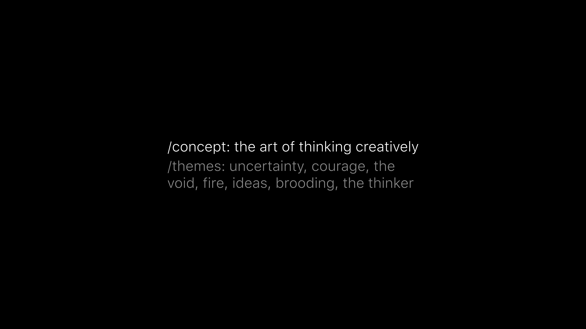
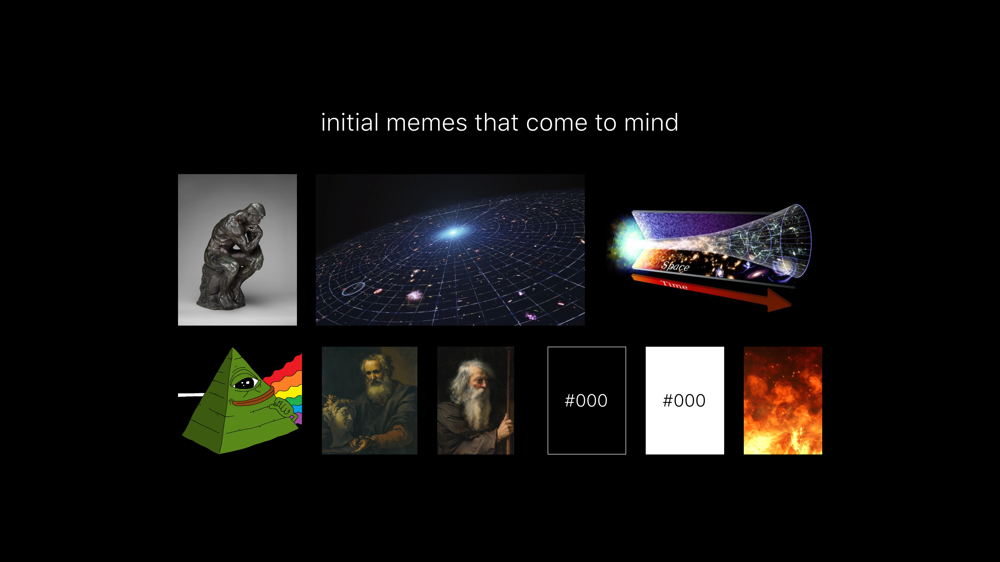
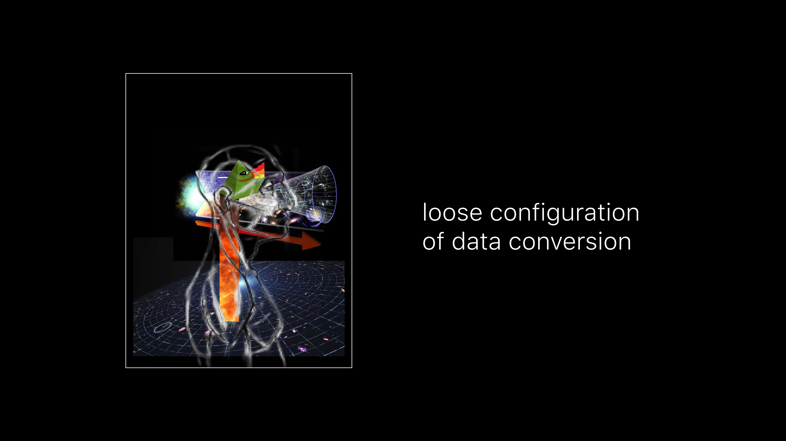
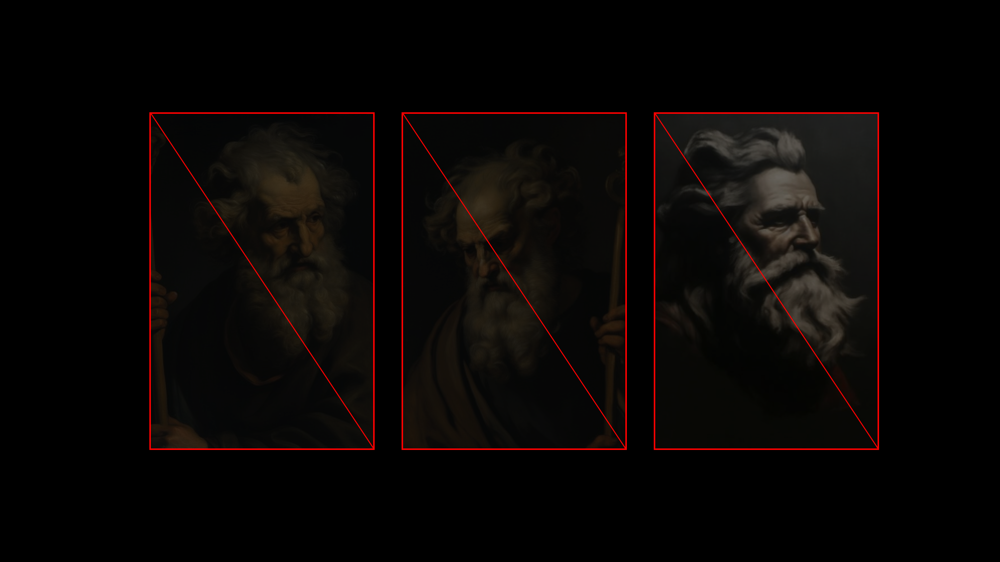
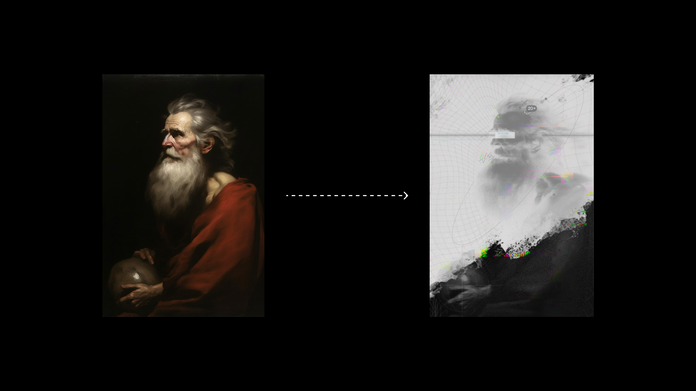
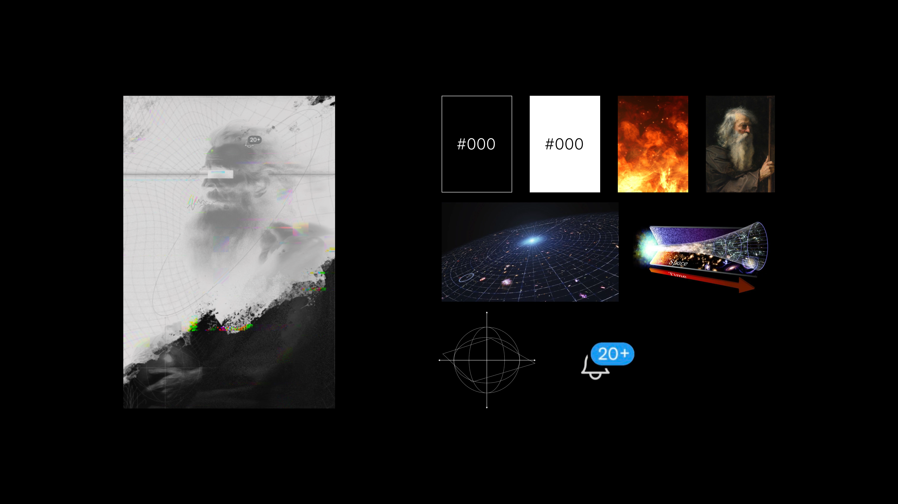
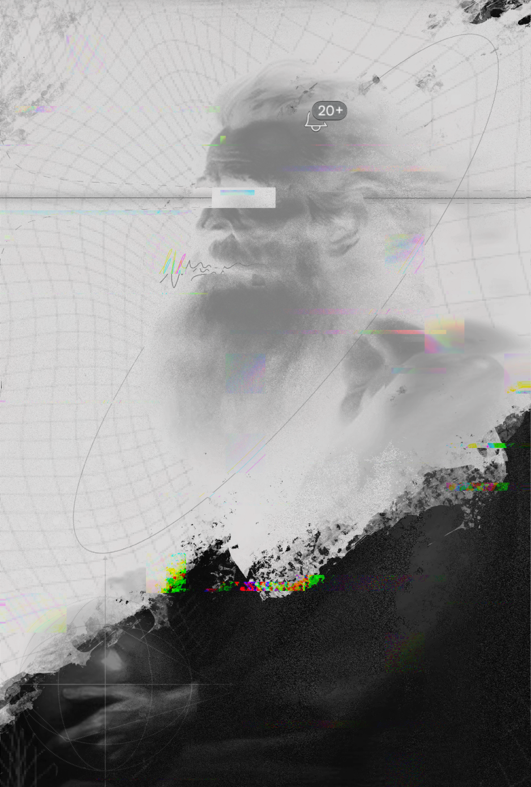

A start to finish creation and breakdown of a meme using visual art

Previous:
A Non-Technical & Highly Speculative Look at Memes: Part 1
A Non-Technical & Highly Speculative Look at Memes: Part 2
A Non-Technical & Highly Speculative Look at Memes: Part 3
A Non-Technical & Highly Speculative Look at Memes: Part 4
A Non-Technical & Highly Speculative Look at Memes: Part 5
A Non-Technical & Highly Speculative Look at Memes: Part 6
Now we will construct a new piece of art from the ground up. We will also examine its memeware for further context on the interconnected nature of this concept in art.
Choosing Data
The act of creation was covered extensively in part 5. For art, we are essentially choosing what data/information we feel like condensing into aesthetically contextual memes. The goals are usually:
- creation of a memetic vessel the creator is pleased with
- representation of inherent information/data with congruent meme choices
- success in transfer of memetic data to other minds through the piece
Starting Point
Data. It’s all data in your mind before it becomes an art piece. Even abstract art holds true to this thread.
The level at which you contextualize the data into modern memeware is an independent choice; but you are deciding to represent some set of data - whether that is an emotion, concept, item, system, etc. Even a blank canvas as art represents the data point of nothingness.
For this piece, I have chosen to use the data points these essays are loosely hovering around - the art of thinking creatively.
Immediately my mind starts to think of underlying themes associated with this main data point:
- uncertainty of the dynamic itself
- courage that is required to do it
- the void of infinite possibilities and unknowns
- fire in the way that heat cooks
- ideas as an object to play with
- brooding as a representation of deep thought or reflection
- The Thinker statue as a possible starting point
Memeplex
Now the vessels for representing these data points and underlying concepts are needed. Tyler The Creator had a wonderful way of articulating the subjective nature of this section. He called it reference points.
Depending on the life you’ve lived, the experiences you’ve had, you will naturally gravitate toward certain references for communicating your vision. For example, if you grew up in the DC-Maryland-Virginia area then you may represent picnics with crabs and Old Bay. If you grew up in Texas, maybe you represent the same picnic with barbecue. Both individuals are correct in their idea of a picnic, yet both use their own set of reference points to communicate it.
When I think of creative thoughtfulness the reference points that come to mind are:
- The Thinker statue
- a interstellar type grid that stretches the cosmos
- a warp tunnel that expands as it stretches through time
- alchemical objects that refract linear light into a colorful spectrum
- old renaissance portraits of stoic men isolated in their quarters
- the colors of black and white
- fire and the feeling of a roaring blaze
Converting Data
We now begin converting the data in our mind to an external container - the canvas.
The goal is to get in tune with the creative flow resonant with our own creative models. For each artist it will look varied. This is the way I currently go about it.
Taking the memes I’ve gathered, I create a loose file representing the projection of my data. If possible I take the exact items I’ve gathered and try to orient them into an outline of the finished piece.
The next step is honing in on the base vertex. I need a skeleton to build on.
Scaling Down
I have decided to go with an older white haired man as the central vertex from which to transfer the inherent data. The reasons are:
- memes related to elderly wisdom (a social bias meme)
- archetypal memes of white-haired old men (zeus, god, etc - a meme corollary)
- renaissance portrait memes of elegance and authority (aesthetic meme)
The above three images were all iterations at honing in on the right feeling for this piece. None of them hit the reference point I was looking for, but they helped me scale down the memetic framework.
Uploading
Through the honing process I found my base vertex (left image). From there it was time to play with the various memes and create a new vessel (right image). This can be thought of as a memeware update. We upload the various concepts, aesthetics, and data points onto the canvas to represent the original idea.
Meme Breakdown
If you go through this essay once more you will see how this meme has been constructed. We started with a specific dataset - the art of thinking creatively.
From there we distilled the core memes and reference points that we natively resonated with.
After the brainstorming we created a rough approximation. This led into blank canvas creation and the hunt for a base vertex to build out from.
Once we honed in on our meme skeleton I began uploading the memeware.
In this particular piece I used:
- black and white to associate with YinYang, the brooding nature we discussed, and a more singular emotion
- a white-fire effect on top, bringing a colder type of heat, but a emotion in the same ballpark as fire
- a warp grid in the background to bring a cosmic-timeless feeling to the perspective
- a beam of light through a tunnel graph to meme the progressive nature of expansion through time that we discussed
During the creation of the piece I realized that I could use three other elements to enhance transferability of this data set; the multi-directional sphere in his hands, a subtle glitch effect with some color, and the notification bell on his scalp.
Meme Leverage
The goal of these essays are not to present a rigid dogma creatives must use. They are intended to provide a flexible framework and understanding of how memes are inherent to art, and how understanding this will naturally boost creative acumen.
I was able to construct a piece of art I am quite pleased with, that accurately represents the intended data/information I had in my own mind, and produce it at a unique and high quality level within a couple hours thanks to this understanding.
The specific piece may not be of interest to you, but you surely understand what it is saying at a guttural level.
This is how you go from this:
to this:
